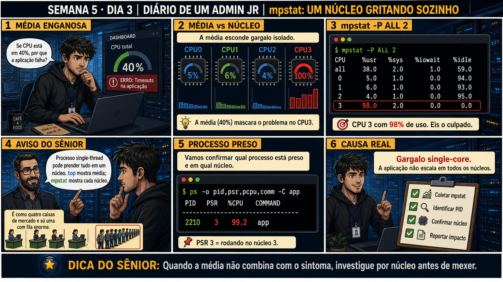

DIARIO DE UM ADMIN JR. | FASE 1 — LINUX, DO BÁSICO AO AVANÇADO
🔗 Conecta com ontem: iostat te ensinou que uma métrica isolada pode enganar. Hoje
o mesmo padrão se repete com CPU: o top mostra 40% de uso médio, mas a aplicação continua travando com
timeouts. A média pode estar escondendo um único núcleo saturado sozinho.
🔓 Privilégio de hoje: diagnosticar por núcleo com mpstat, não só pela média.
Você ganha o hábito de investigar por núcleo individual quando a média geral não bate com o sintoma real.
Semana 5 · Dia 3 | Nível Júnior
mpstat: Um Núcleo Gritando Sozinho
quando a média não combina com o sintoma, investigue por núcleo antes de mexer
ANTES DE ALTERAR, OBSERVE. DEPOIS DE ALTERAR, VALIDE.

1. O chamado
O dashboard mostra CPU total em 40% — parece tranquilo. Mas a aplicação continua com
timeouts intermitentes. Um número médio confortável pode estar escondendo um problema concentrado num único
lugar.
💡 Passa o mouse nas palavras destacadas pra ver uma dica rápida — clica se quiser a explicação completa com analogia.
2. O sênior te conta
🧑🏫 antes dos termos técnicos, a história de hoje
Hoje o dashboard mostrava CPU total em 40% — número tranquilo. Mas usuários continuavam relatando
timeouts intermitentes. O Júnior ficou confuso: "se a métrica está normal, por que o sintoma continua?"
Era o mesmo padrão de ontem, só que agora com CPU: uma média confortável escondendo um problema
concentrado.
Rodamos mpstat -P ALL 2 — e ali estava: núcleos 0, 1 e 2 tranquilos, abaixo de 6%, mas o
núcleo 3 sozinho em 98%. A média de quatro núcleos (38%) era matematicamente correta, mas escondia
completamente o gargalo real — é a nota média da turma escondendo um aluno reprovado. Confirmamos com
ps -o pid,psr,pcpu,comm qual processo estava preso àquele núcleo: app, PID
2210, PSR 3, 99,2% de CPU.
O Júnior perguntou: "então é só reiniciar que libera?". Expliquei que não — a aplicação é single-thread,
só consegue usar um núcleo por vez, não importa quantos núcleos o servidor tenha. Reiniciar zera o
processo por um momento, mas assim que a carga real voltar, ela vai saturar um núcleo de novo, do mesmo
jeito. É um gargalo de arquitetura da aplicação, não um estado temporário — reset não resolve estrutura.
3. Decodificador de conceitos
Clica em qualquer termo pra ver a definição completa e uma analogia do dia a dia:
4. Ferramentas e leitura da evidência
Comando
O que observar e por que importa
mpstat -P ALL 2
Mostra %usr, %sys, %iowait e %idle por núcleo individual, não só a média.
ps -o pid,psr,pcpu,comm -C app
Confirma em qual núcleo (PSR) um processo específico está rodando.
A média geral (38%) esconde o núcleo 3 sozinho em 98% — exatamente o processo app (PID
2210), rodando preso ao PSR 3.
5. Laboratório guiado — pegue na mão, comando por comando
Segurança: execute os testes apenas em VM descartável e confirme nomes de discos, hosts e arquivos antes de cada comando.
Ação: Confirme quantos núcleos a VM tem e o uso individual de cada um.
mpstat -P ALL 2
Resultado esperado: lista de núcleos com uso individual mostrado.
Por que fizemos isso: conhecer a topologia de núcleos da sua VM é o pré-requisito pra qualquer diagnóstico por núcleo — sem saber quantos existem, você não consegue interpretar o padrão.
Cilada comum: olhar só a linha "all" (média) e ignorar as linhas individuais — é exatamente essa linha que esconde o problema, como a história de hoje mostrou.
Ação: Gere uma carga single-thread e observe qual núcleo ela satura.
yes > /dev/null &
Resultado esperado: um único núcleo saturado em ~100%, os outros permanecendo tranquilos.
Por que fizemos isso: ver esse padrão acontecer de propósito, sabendo a causa exata, é o que fixa o reconhecimento pra quando aparecer sem aviso num chamado real.
Cilada comum: esquecer de encerrar o processo yes depois do teste — ele continua consumindo um núcleo indefinidamente até você matá-lo.
Ação: Identifique o PID e o núcleo exato do processo de teste.
ps -o pid,psr,pcpu,comm -C yes
Resultado esperado: PSR confirmando qual núcleo específico o processo está usando.
Por que fizemos isso: a coluna PSR é o que conecta o número frio do mpstat a um processo real e nomeável — sem ela, você sabe QUE núcleo está saturado, mas não POR QUEM.
Cilada comum: assumir que o núcleo saturado é sempre o mesmo — o kernel pode migrar processos entre núcleos ao longo do tempo, então confirme o PSR no momento certo.
🧑🏫 Aqui entra o Mentor (em breve): se você quiser entender por que uma aplicação específica não usa múltiplos núcleos, este é o ponto onde o chat com o Sênior-IA vai ajudar a explicar.
Ação: Encerre o processo de teste e confirme o retorno ao normal.
kill %1
mpstat -P ALL 2
Resultado esperado: todos os núcleos voltando a valores baixos de uso.
Por que fizemos isso: validar que TODOS os núcleos voltam ao normal (não só o médio) é a prova completa de que o teste terminou como esperado.
Cilada comum: validar só a média geral no final, sem checar núcleo por núcleo — é exatamente o hábito que a aula toda existe pra quebrar.
Ação: Documente sintoma, média enganosa, núcleo real e processo responsável.
# não é comando de shell — é o registro final
# ex: "Sintoma: timeouts, CPU média 40%. Evidência: núcleo 3 em 98% (mpstat), processo app PID 2210 (ps -o psr). Causa: single-thread, estrutural."
Resultado esperado: registro completo reproduzindo o painel 6 da prancha de hoje.
Por que fizemos isso: registrar explicitamente "estrutural, não temporário" é o que evita que alguém tente "resolver" com um simples restart no futuro.
Cilada comum: documentar só "CPU alta" sem especificar que é um núcleo isolado — perde a informação mais importante do diagnóstico.
6. Antes de ver as opções — tenta responder
🧠 Recall ativo: por que a %CPU total pode parecer normal mesmo quando um processo
está travando tudo?
Porque a média divide o uso entre todos os
núcleos —
um processo single-thread
pode saturar 100% de UM núcleo sozinho, e num servidor de 4 núcleos isso ainda dá só 25% de
média geral —
escondendo completamente o gargalo real.
QUESTÃO 1 de 3
7. Questão comentada — clica numa alternativa
CPU total mostra 40%, mas a aplicação trava com timeouts intermitentes. Qual é
o próximo passo correto de investigação?
💡 Analogia do Sênior para Fixar: O 'mpstat -P ALL 2' é como olhar o velocímetro de cada motor de uma aeronave quadrimotor: mostra se apenas uma turbina está em 100% enquanto as outras estão ociosas.
QUESTÃO 2 de 3 — cenário de erro real
7.1 Um único núcleo em 98%, os outros três abaixo de 6% — o que isso confirma?
O processo app (PID 2210) está preso ao núcleo 3 (PSR 3), consumindo 99,2% de CPU, enquanto
os núcleos 0, 1 e 2 permanecem quase ociosos.
Qual é a causa raiz correta pra esse padrão?
💡 Analogia do Sênior para Fixar: A coluna '%iowait' alta é como o motorista pisando fundo no acelerador com o freio de mão puxado: a CPU não está lenta, ela só está travada esperando o disco responder.
QUESTÃO 3 de 3 — detalhe que confunde todo iniciante
7.2 "Se um núcleo está em 98%, é só reiniciar que ele libera, certo?"
Um colega sugere reiniciar o servidor pra "liberar" o núcleo saturado, sem entender a causa raiz do
comportamento single-thread.
Reiniciar o servidor resolve esse problema de forma definitiva?
💡 Analogia do Sênior para Fixar: A diferença entre processo single-thread e multi-thread é como um único carregador de peso vs uma equipe inteira: o single-thread trava um núcleo e deixa o resto do time sem trabalho.
8. Procedimento profissional
Se a média geral não bate com o sintoma relatado, quebre por núcleo com mpstat -P ALL.
Identifique se algum núcleo específico está isoladamente saturado.
Confirme com ps -o psr,pcpu,comm qual processo está preso a esse núcleo.
Diagnostique se é comportamento single-thread (estrutural) ou algo pontual.
Reporte a causa real, sem confundir com falta geral de CPU.
Prevenção — o que evita repetir esse tipo de problema
Documente no runbook da aplicação se ela é single-thread ou multi-thread desde o início —
isso muda completamente como interpretar métricas de CPU dela no futuro. Configure alertas de monitoramento
por núcleo, não só na média geral, pra pegar esse tipo de gargalo antes de virar ticket de "aplicação
travando".
9. Validação e encerramento
A média geral não foi tratada como resposta final quando não batia com o sintoma.
O uso por núcleo foi investigado com mpstat -P ALL.
O processo responsável foi identificado com PSR via ps.
A causa foi corretamente atribuída a comportamento single-thread, não falta de CPU.
Rollback e limites
mpstat e ps são somente leitura — não existe rollback. O limite real é assumir que
reiniciar resolve um problema estrutural de arquitetura da aplicação, quando na verdade só adia o mesmo
padrão se repetindo.
💡 Sobre repetição espaçada: "a média pode esconder o gargalo real" conecta
diretamente com iostat de ontem (%util/await escondidos atrás de espaço livre) — o mesmo princípio, aplicado
a CPU hoje. O Anki vai conectar os dois.
10. Resposta final
Alternativa correta: B. Nesta aula, a decisão correta foi rodar
mpstat -P ALL 2 pra ver o uso de CPU núcleo por núcleo, não só a média. O ponto central do caso é este:
quando a média não combina com o sintoma, investigue por núcleo antes de mexer.
🔓 O que você desbloqueou hoje
Capacidade de diagnosticar gargalos de CPU escondidos atrás de médias
confortáveis. Amanhã você aprende a mapear discos e partições — o passo antes de qualquer trabalho real com
storage e LVM.